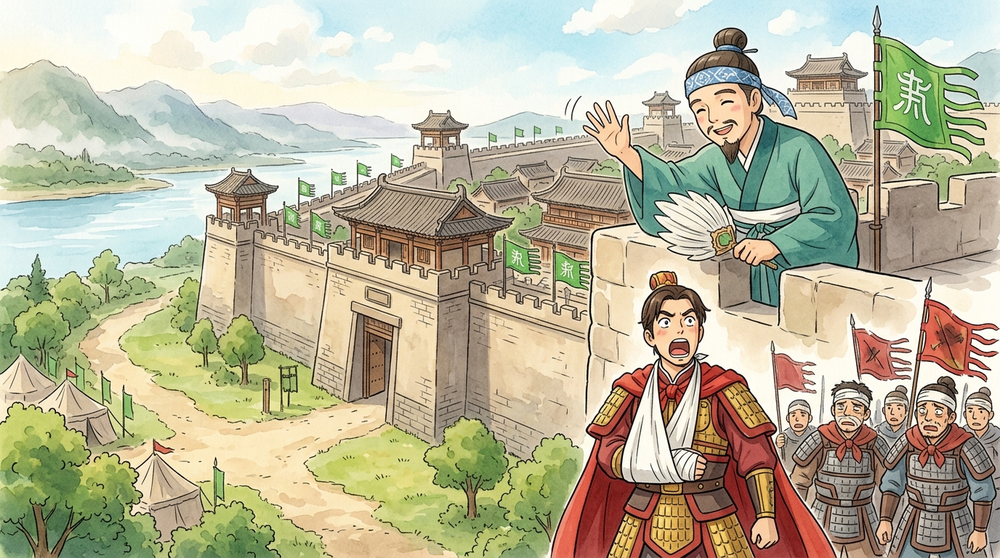
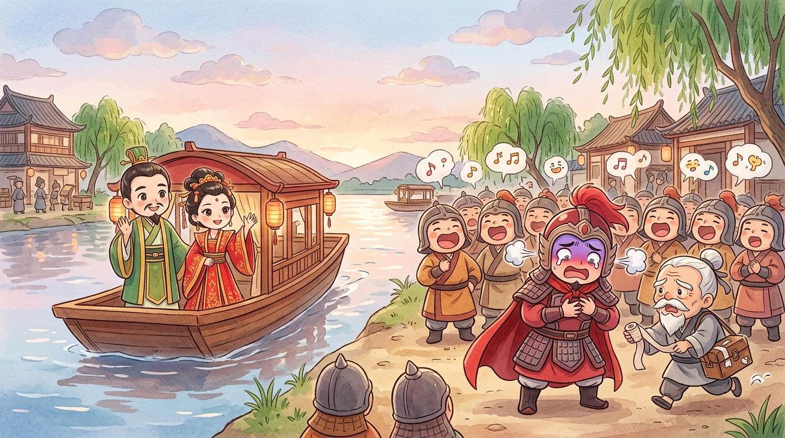
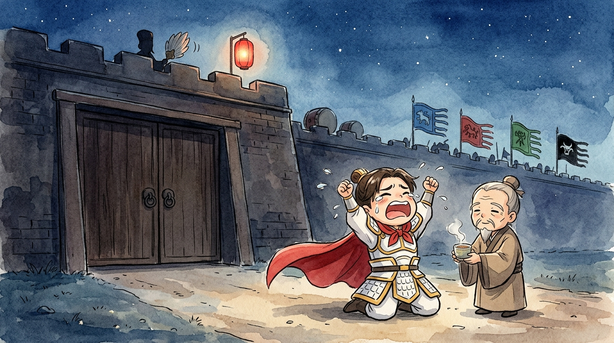

CONFIDENTIAL: Medical records of the Royal Physician of Wu (吳). Patient: Grand Commander Zhou Yu (周瑜), age 34. Condition on first visit: perfect health, dashing looks, musical genius, hero of the Battle of Red Cliffs.1 Complaint: a certain feather-fanned strategist. I am recording these notes so that future doctors may study the world's most unusual illness: a disease called "Zhuge Liang."
🩺 Case Note One: The city that walked away (一氣周瑜)
After our glorious victory at Red Cliffs, my patient set his heart on the great river-city of Nanjun (南郡), key to the whole region of Jingzhou (荊州).2 He fought bravely for it against Cao Cao's (曹操) cousin, the fierce general Cao Ren (曹仁). For a whole year my patient schemed, charged, and even took a poisoned arrow to his side — I treated the wound myself and ordered him, very clearly: "No rage. Rage will burst the wound." He laughed at me. Doctors are used to this.
To win, my patient even faked his own death, luring Cao Ren into attacking an "unguarded" camp that was actually a trap. Brilliant! Cao Ren's army was smashed, and Nanjun stood open at last. My patient rode to the gates, dreaming of his prize…
…and found flags already flying on the walls. While the two armies had been busy pounding each other, Zhuge Liang (諸葛亮) had quietly walked in and taken the city — and used its official seals to trick two more cities into opening their gates the same night. Three cities. Zero battles. All the hard fighting: my patient's. All the prizes: Liu Bei's (劉備).
Medical observation: patient turned an alarming shade of crimson, screamed "ZHUGE LIAAANG!", and his arrow wound burst open. First recorded attack of the disease. Prescribed: rest, calming tea, and absolutely no thinking about feather fans.

🩺 Case Note Two: The wedding that backfired (二氣周瑜)
My patient recovered, and being a genius, produced a new plan. Liu Bei's wife had passed away, so my patient proposed a fake marriage: invite Liu Bei to Wu to marry our lord Sun Quan's (孫權) younger sister, then hold him prisoner and trade him back for Jingzhou! A wedding as a mousetrap — I confess, doctor though I am, it was rather clever.
What happened next deserves its own file — the full story of the three silk pouches is recorded in a separate document, 錦囊妙計 — but the medical summary is this: Zhuge Liang saw through the whole thing, turned the fake wedding into a real one, and Liu Bei sailed home with a brilliant warrior bride, while our pursuing soldiers stood on the riverbank listening to the enemy chant a little song:
Medical observation: upon hearing the chant, patient made a sound like a boiling kettle and fainted off his chair. Wound reopened. Second attack. I prescribed thicker bandages and, for myself, a holiday. Request denied.

🩺 Case Note Three: The shortcut that wasn't (三氣周瑜)
By now my patient thought about Zhuge Liang at breakfast, at dinner, and — his poor wife reports — loudly in his sleep. His final plan was his sneakiest. Wu would generously offer to conquer the far western lands of Xichuan (西川) and give them to Liu Bei, in exchange for Jingzhou. Generous, yes? Except — to march west, our army would need to pass through Jingzhou. And once inside the gates… surprise! Take the city! This trick even has a fancy name: "borrow a road to conquer" (假途滅虢).4
My patient led the army himself. As they approached Jingzhou, he smiled for the first time in months. Then the city gates stayed shut. On the wall, a soldier called down, politely: "The Prime Minister Zhuge Liang thanks you for your kind offer… but he guessed this plan long ago." And war drums answered from every direction — armies closing in from four sides, and a letter arrived from Zhuge Liang himself, full of courteous concern for my patient's health, advising him to go home and rest.
Medical observation: the patient read the letter, went white, then red, then a colour I have no name for. He cried to the sky the most famous sigh in all our records:

Soon after, at only thirty-six, my patient's wounds and fury finally overcame him, and the great commander of Wu passed away.5 The whole kingdom wept — he truly was a hero, whatever this file may suggest. And here is the strangest entry in all my records: Zhuge Liang himself came to the funeral. He wept over the coffin — real tears, witnesses swear — and praised my patient's brilliance so movingly that even Wu's angriest generals lowered their swords. Some say the tears were political theatre. Some say that geniuses, even rival ones, are the only people who truly understand each other. I am only a doctor. I record; you decide.
🩺 Final diagnosis
And here, future doctors, is the entry that keeps me up at night. These two men were not born enemies. At Red Cliffs they had been partners — two brilliant minds writing the same word, "fire," on their palms, winning the impossible battle together. Working side by side, they saved two kingdoms in a single night. Imagine what ten more years of that partnership might have built. Jealousy did not just shorten my patient's life; it robbed the whole age of its finest team.
Cause of illness? Not Zhuge Liang, in truth. The real disease was jealousy — and the belief that being second-best made him worthless. My patient was one of the most gifted people of his age: a battle-winner, a music master, a loyal friend to his lord.6 Had he seen his rival as a teacher instead of a torment, this file would be much shorter and much happier.
So, future readers of this confidential file, take your doctor's advice: somewhere in your life there is a person who always seems one step ahead — in class, in games, in everything. You have two choices. Let it eat you up like my poor patient… or learn from them, and grow. That prescription costs nothing. Take it daily. 🩺